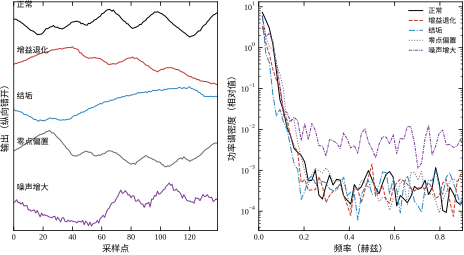
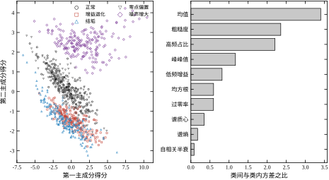
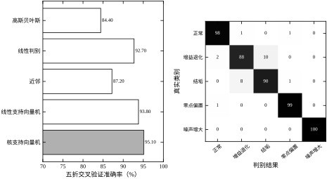
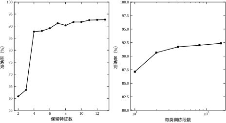
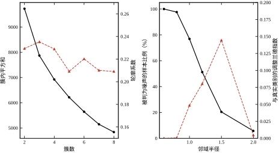
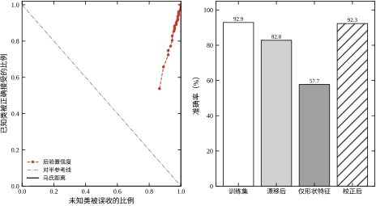

第 24 章把“一份数据能不能变成一个模型”讲完了。那一章的产物是参数、阶次、延迟和不确定度——都是连续量。工程现场还有另一类问题：设备现在是正常还是异常，异常属于哪一种，这批产品合不合格，相机里的目标是哪一个零件。这类问题的答案不是数，而是类别。把连续量变成类别，靠的是模式识别。本章讨论它在控制工程里的形态：怎样从一段信号里取出几个数，怎样用这几个数把工况分开，怎样判断一个新样本属于已知类别还是根本没见过，以及这套东西上线之后会怎样慢慢失效。
先把这个分界说清楚，因为它在工程上常被混淆。参数辨识问的是“对象的系数是多少”，输出是实数向量，评价标准是误差的方差；模式识别问的是“这段数据属于哪一类”，输出是离散标签，评价标准是判对的比率。前者的错误可以连续地小，后者的错误只有对与错两种。
这个区别带来三个连锁后果。第一，数据量的要求不同。辨识要估 4 个参数，2000 拍数据足够；识别要估的是类条件分布的形态，每一类都需要独立的一段数据，五类就是五份。第二，模型形式不同。辨识的模型是差分方程，参数有物理意义；识别的模型是特征空间里的一个划分，划分边界本身没有物理意义，只有它落在哪些特征上才有。第三，失效方式不同。辨识失效表现为参数漂移、预测变差，是渐进的；识别失效表现为某一类突然被整体判错，是阶跃式的，而且往往发生在工况变化之后，不在训练集覆盖的范围内。
控制工程里两类问题往往同时出现。一个伺服系统，机械参数（惯量、摩擦）要靠辨识得到，用于前馈补偿；而“负载是否卡滞”“编码器是否跳变”要靠识别判断，用于报警和切换。前者写进控制器，后者写进监控。把两者混为一谈，最常见的错误是拿辨识的精度指标去要求分类器——比如要求分类器“误差小于 1%”，这个说法没有意义，分类器的指标只能是准确率、误报率、漏报率。
还有一层区别在数据来源上。辨识必须知道输入，回归量里要有 u；识别可以只用输出。这一点在现场很实际：很多老设备只留了测量通道，没有同步记录执行器指令，此时参数辨识做不了，模式识别仍然可以做。本章的实验里有一半特征只用输出，另一半（低频增益）需要输入，第 25.6 节会看到这两类特征的判别力差异。
本章用一个统一的算例贯穿全章：一台二阶过程，传递函数为
G(s)=\frac{K}{(T_1 s+1)(T_2 s+1)},\qquad T_2=3\ \mathrm{s} \tag{25-1}
采样周期 T_s=0.5 s，激励为每 4 s 切换一次的双电平伪随机信号，每段记录 256 拍。过程有五种运行状态：
这五种状态对应五类现场问题：执行机构磨损、传热恶化、仪表零点漂移、接线干扰或接地不良。它们有一个共同点——都不会让系统立刻停机，但都会让控制品质慢慢变差，所以需要在线判别。每类采集 200 段，共 1000 段数据，每段独立抽取激励相位与噪声。
图 25-1 左列画出五类状态的典型波形。人眼能看出三件事：增益退化那一类的幅值明显偏小；结垢那一类变化更慢、波形更“钝”；噪声增大那一类毛刺明显。零点偏置那一类最难用眼睛判断——它的波形形状与正常几乎一样，只是整体抬高，而这种抬高只有 0.25，在 ±1 的波动里不显眼。右列的功率谱把差别放大了：增益退化整条谱线向下平移，结垢把能量压向低频，噪声增大把高频段抬起来，零点偏置则几乎不动。

这张图已经说明了模式识别的核心困难：有些类别在原始波形上几乎不可见，必须换一个“看”的角度。 零点偏置在时域里被波动掩盖，在频域里没有痕迹，但它的段均值是 0.25，而正常段的均值在零附近抖动——只要把“段均值”当成一个特征，这一类立刻就分开了。反过来，如果把每段数据先去均值再分析（这是信号处理的习惯做法），零点偏置的信息就被自己删掉了。特征提取的第一条原则由此而来：先去什么、留什么，取决于要判哪一类故障，而不取决于信号处理教科书的默认流程。
在展开方法之前，先看三个“看起来该成功、实际失败”的结果。它们构成本章的问题清单。
第一个反例关于降维。把 13 个特征标准化后做主成分分析，前两个主成分解释了 61.54% 的方差，画在平面上是一张漂亮的图；但五类的中心在二维平面上最小间距只有 0.08，而类内平均标准差是 1.39——中心间距比类内散布小一个数量级，五团点完全糊在一起。也就是说，保留方差最多的两个方向，恰好不是分开类别的方向。 PCA 是无监督的，它不知道类别存在，自然不能保证保留判别信息。
第二个反例关于聚类。用 K 均值把 1000 段数据分成 5 簇，与真实标签比较，调整兰德指数只有 0.251；轮廓系数在簇数取 3 时最高（0.235），而不是取 5 时。也就是说，聚类算法认为“三类”最自然，而真实类别是五类。 原因很直接：K 均值最小化的是簇内欧氏距离，它把“正常”与“噪声增大”合成一簇——这两类在特征空间里确实挨得近，只是判别边界可以切开它们。聚类回答的是“数据在哪里密”，分类回答的是“边界在哪里放”，两个问题的答案不必一致。
第三个反例关于拒识。用四类训练一个线性判别器，把第五类当作“未知”，再用后验概率最大值做拒识判据：置信度高于阈值就接受，低于就拒绝。结果受试者工作特征曲线下的面积（AUC）只有 0.214——比随机猜（0.5）还差。原因是线性判别的后验在远离所有类中心时会饱和到 1：未知样本离所有已知类都远，线性判别函数的值反而更大，置信度更高。换成马氏距离判据后，同一批数据的 AUC 是 1.000。同一个模型，换个判据，拒识能力从“完全失效”变成“完全可分”。
三个反例指向同一个结论：模式识别的成败主要不在分类器，而在特征、判据与评价方式。本章余下的部分就按这三件事展开。
把上面的经验整理成四道关口，列在表 25-1。每一道关口都有一个“看起来合理但会出错”的做法，和一个“成本低但有效”的对照做法。
表 25-1 模式识别的四道关口与常见陷阱
| 关口 | 要回答的问题 | 常见陷阱 | 对照做法 |
|---|---|---|---|
| 特征 | 哪些量能把类别分开 | 沿用信号处理的默认流程（先去均值、只看幅值） | 先按物理机理列出候选，再看判别力排序 |
| 判别 | 边界放在哪里 | 只比较分类器，不比较特征集 | 固定分类器，扫特征数；固定特征，扫分类器 |
| 无监督 | 有几个类 | 把聚类数当作类别数 | 用聚类发现新类，不用它代替分类 |
| 部署 | 新样本可信吗 | 用后验概率做拒识 | 用距离或密度做拒识，另设阈值 |
四道关口的顺序不能颠倒。特征没选对，换再好的分类器也只能在噪声里找边界；判别边界没验好，聚类得到的簇数没有意义；前三道都过了，部署阶段的拒识与漂移仍然会让系统在上线三个月后失效。表 25-1 的最后一列都不是“更高级的方法”，而是“更便宜的对照”——这一点在后文反复出现。
第三道关口容易被低估。工程上常有人问“能不能不用标签，直接聚类看看有几类故障”。答案是：聚类可以用来发现“有一批样本谁也不像”，但不能用来给它们命名，也不能用来确定类别数。本章实验里 K 均值给出 5 簇时 ARI 只有 0.251，给出 3 簇时轮廓系数最高，两个数字都不支持“聚类能替代分类”这个想法。
第四道关口则是上线之后才暴露的。本章实验里，训练集准确率 92.90% 的模型，在传感器量程整体偏大 15% 之后掉到 82.80%；如果只用形状类特征，准确率虽然对量程漂移完全不敏感（57.70% 对 57.70%），但水平低了三十五个百分点。这两个数字一起说明：鲁棒性与判别力是一对需要显式权衡的量，不能靠“多收集数据”同时解决。
把本章要回答的问题写成五条，每条都对应一个可以量化的实验：
这五个问题由浅入深：前两个问“能不能分开”，第三个问“要多少代价才能分开”，后两个问“分开的结论可不可信”。工程上最常见的失误是只做前两个——在训练集上把准确率刷到 95%，就认为任务完成，完全不做后两个。
本章的结构对应这条路线。25.2 节给定义与数学基础，25.3 节推导几条决定成败的性质（判别方向的来源、维数上限、后验饱和），25.4 节讲数值实现与部署细节，25.5 节给适用边界，25.6 节用六组实验逐个回答上面五个问题，25.7 节收拢结论与常见错误。
模式识别的输入是一段有限长的采样序列，输出是一个标签。中间那一步叫特征提取：把长度 256 的实数序列压缩成十几个数，并且要求这十几个数里保留了区分类别所需的信息。
设一段输出为 y_0,\dots,y_{N-1}，N=256。本章用到的特征分三类。
第一类是幅值与波形统计量。段均值保留直流信息， \bar y=\frac{1}{N}\sum_{k=0}^{N-1}y_k \tag{25-2} 均方根与峰峰值描述波动幅度， y_{\mathrm{rms}}=\sqrt{\frac{1}{N}\sum_{k=0}^{N-1}(y_k-\bar y)^2},\qquad y_{\mathrm{pp}}=\max_k y_k-\min_k y_k \tag{25-3} 峭度描述波形的尖峰程度， \kappa=\frac{\frac{1}{N}\sum_{k=0}^{N-1}(y_k-\bar y)^4}{y_{\mathrm{rms}}^4} \tag{25-4} 过零率是符号变化的频次，z=\frac{1}{N-1}\sum_{k=1}^{N-1}\mathbf{1}\{\operatorname{sgn}(y_k-\bar y)\ne\operatorname{sgn}(y_{k-1}-\bar y)\}。这五个量都是“幅值类”的，共同特点是对量程变化敏感——传感器增益整体偏 15%，它们就整体偏 15%，判别边界立刻失配。
第二类是频域与相关类特征。归一化自相关为 r(\tau)=\frac{\sum_{k=\tau}^{N-1}(y_k-\bar y)(y_{k-\tau}-\bar y)}{\sum_{k=0}^{N-1}(y_k-\bar y)^2} \tag{25-5} 取 |r(\tau)| 首次落到 0.5 以下的滞后 \tau_{1/2}，乘以采样周期得到“自相关半衰时间”，它直接反映主导时间常数。功率谱用 Welch 法估计，得到 \hat S_y(f)，归一化成概率分布 p_f=\hat S_y(f)/\sum_f \hat S_y(f) 后，谱质心与谱熵为 f_c=\sum_f f\,p_f,\qquad H=-\frac{\sum_f p_f\ln p_f}{\ln M} \tag{25-6} 其中 M 是频点个数。低频占比与高频占比分别是 p_f 在 f<0.03 Hz 与 f>0.30 Hz 上的和。
第三类需要输入信号：用互谱估计低频增益， \hat K_{\mathrm{lf}}=\operatorname{median}_{f<0.02\,\mathrm{Hz}} \frac{|\hat S_{uy}(f)|}{\hat S_{uu}(f)} \tag{25-7} 这是第 24 章频域辨识的简化版，只取一个频段、不做参数拟合。它能把“增益变小”与“变慢”分开：增益退化让 \hat K_{\mathrm{lf}} 成比例下降，结垢则基本不动。
最后一个是差分粗糙度 \rho=\frac{\sqrt{\frac{1}{N-1}\sum_{k=1}^{N-1}(y_k-y_{k-1})^2}}{y_{\mathrm{rms}}} \tag{25-8} 它是无量纲的，对量程不敏感，对噪声与高频成分很敏感。
13 个特征拼成一个向量 \mathbf{x}\in\mathbb{R}^{13}，一段数据就变成了特征空间里的一个点。这个映射不是单射：不同的波形可能映到同一个点，不同的点也可能来自同一类工况。模式识别的全部困难，都来自这个映射丢掉了什么。
把这 13 个特征按“对哪一类敏感”排一遍，可以看出它们并不是平权的。段均值只对零点偏置敏感，其余四类的均值都在零附近抖动；均方根与峰峰值对增益退化敏感，因为增益直接缩放幅值；自相关半衰与低频占比对结垢敏感，主导时间常数从 8 s 增到 16 s，波形变钝，能量压向低频；峭度、过零率、高频占比、谱熵与粗糙度都在度量“波形有多毛糙”，因而对噪声增大敏感；低频增益同时对增益退化与激励幅值敏感，是唯一必须用到输入的特征。这张“特征—类别”对应关系应当在设计阶段就写下来，它决定了后续任何一次特征增删会影响哪几类。
为什么需要 13 个而不是 5 个？因为单个特征很少只对一类敏感。幅值类特征对增益退化敏感，对噪声增大同样敏感；粗糙度对噪声敏感，对量程漂移也略有反应。多留几个特征，是为了让判别方向能在“几个特征同时变化”的组合里找到区分依据。代价有两项：协方差矩阵的估计误差随维数增长，计算量随特征数线性增长。25.3.5 节会把这两项代价换算成样本量要求。
还有一层要注意：特征的物理来源决定了它的失效模式。段均值依赖传感器的直流通道，零点漂移与温漂都会污染它，但它对采样抖动不敏感；谱类特征依赖频率轴，采样周期的任何偏差都会让它整体平移；低频增益依赖输入输出同步，两个通道之间若有一个采样周期的错位，相位信息就错了，幅值信息还在，所以它比相位类特征稳，但也不完全免疫。选特征时要连同“它在什么条件下会骗人”一起记下来，这条信息在上线后的故障排查里比特征本身的数值更有用。
设类别 C_1,\dots,C_m，先验概率 P(C_k)，类条件密度 p(\mathbf{x}\mid C_k)。给定观测 \mathbf{x}，后验概率由贝叶斯公式给出 P(C_k\mid\mathbf{x})=\frac{p(\mathbf{x}\mid C_k)P(C_k)}{\sum_{j=1}^{m}p(\mathbf{x}\mid C_j)P(C_j)} \tag{25-9} 最小错误率决策取后验最大的类， \hat c(\mathbf{x})=\arg\max_k P(C_k\mid\mathbf{x}) \tag{25-10} 分母与 k 无关，所以判决只依赖分子 p(\mathbf{x}\mid C_k)P(C_k)。两类情形下，边界由 p(\mathbf{x}\mid C_1)P(C_1)=p(\mathbf{x}\mid C_2)P(C_2) 决定；若两类都是等协方差的高斯分布，取对数后二次项相消，边界退化成超平面 \mathbf{w}^{\mathsf T}\mathbf{x}+w_0=0,\qquad \mathbf{w}=\Sigma^{-1}(\boldsymbol\mu_1-\boldsymbol\mu_2) \tag{25-11} 这个式子是后面所有线性方法的源头。它说明两件事：判决方向由“类中心之差经协方差白化”决定；先验只移动阈值 w_0，不改变方向。若两类协方差不同，二次项不相消，边界是二次曲面，这就是二次判别。
最小错误率并不是工程上唯一的目标。若把“正常判成故障”与“故障判成正常”的代价分别记为 c_{12} 与 c_{21}，判决应改为最小化期望风险 \sum_{j\ne k}c_{jk}P(C_j\mid\mathbf{x})，取使该和最小的类。两类情形下这等价于把阈值从 0 移到 \ln(c_{12}/c_{21})，方向不变。代价只改阈值，不改方向，这条结论在多类情形下同样成立，是后面“分级报警”做法的理论依据。现场常见的要求是“漏报代价是误报的二十倍”，换算过去就是把阈值往“更容易报警”的一侧推，用 20 倍的误报换取漏报的减少。本章实验都按等代价处理，所以给出的准确率是一个中性参照；真实系统里必须把代价比写进阈值。
贝叶斯决策还有一个常被忽略的选项：拒绝判决。若所有类的后验都低于某个水平，就输出“无法判定”而不是硬选一个。这在理论上等价于给每类加一个“拒识”的代价，在工程上就是把“拿不准”变成一条显式的输出。可惜的是，如 25.3.3 节将要推导的，后验概率本身在远离训练分布时的行为并不可靠，所以“拿不准”这件事不能只靠后验来判断。
还要区分两个容易混淆的模型。式 (25-11) 假设各类共享协方差，参数少、边界是超平面，这叫线性判别；若让每类各用自己估计的协方差，边界变成二次曲面，这叫二次判别，在文献里常与“高斯贝叶斯”混称。本章实验里二次判别的准确率是 84.40%，比线性判别的 92.70% 低 8.3 个百分点——原因不是二次边界表达能力不够，而是每类 200 段数据估一个 13\times13 协方差太勉强。模型复杂度要由数据量决定，而不是由“理论上更一般”决定，这一点在第 24 章的阶次选择里已经出现过一次。
实际工作中类条件密度往往未知，P(C_k) 也不知道。Fisher 的思路是绕开密度估计，直接找一个投影方向，使投影后“类间散得开、类内挤得紧”。
记类内散度矩阵与类间散度矩阵 S_w=\sum_{k=1}^{m}\sum_{\mathbf{x}\in C_k}(\mathbf{x}-\boldsymbol\mu_k)(\mathbf{x}-\boldsymbol\mu_k)^{\mathsf T},\qquad S_b=\sum_{k=1}^{m}n_k(\boldsymbol\mu_k-\boldsymbol\mu)(\boldsymbol\mu_k-\boldsymbol\mu)^{\mathsf T} \tag{25-12} 其中 n_k 是第 k 类的样本数，\boldsymbol\mu 是总均值。Fisher 判据是两者的比值 J(\mathbf{w})=\frac{\mathbf{w}^{\mathsf T}S_b\mathbf{w}}{\mathbf{w}^{\mathsf T}S_w\mathbf{w}} \tag{25-13} 对 \mathbf{w} 求导并令其为零，得到广义特征值问题 S_b\mathbf{w}=\lambda S_w\mathbf{w} \tag{25-14} S_b 的秩不超过 m-1，所以非零特征值最多 m-1 个。这条性质有一个很实际的推论：线性判别最多把数据投影到 m-1 维，五类问题最多四维，再多的判别方向不存在。 试图用线性判别把五类画在二维平面上，必然丢掉一部分判别信息——这是 25.1 节第二个反例的另一面。
当 S_w 可逆时，式 (25-14) 等价于对 S_w^{-1}S_b 做特征分解；由于 S_b 的秩限制，实际只需算前 m-1 个特征向量。这个“先白化再找类间方向”的两步结构，与式 (25-11) 完全一致：Fisher 判别就是“协方差已知、均值未知”情形下的贝叶斯边界。
线性判别只要求“分对”，不要求“分得稳”。支持向量机多加一条要求：边界两侧要留出尽可能宽的空白带。二类情形的原始问题是 \min_{\mathbf{w},b,\boldsymbol\xi}\ \tfrac12\|\mathbf{w}\|^2+C\sum_{i=1}^{n}\xi_i, \quad \text{s.t.}\ y_i(\mathbf{w}^{\mathsf T}\mathbf{x}_i+b)\ge 1-\xi_i,\ \ \xi_i\ge 0 \tag{25-15} 其中 y_i\in\{-1,+1\}，\xi_i 是允许越界的松弛量，C 控制“间隔宽度”与“越界惩罚”的交换。对偶问题只依赖样本之间的内积，把内积换成核函数 K(\mathbf{x}_i,\mathbf{x}_j) 就得到非线性边界 f(\mathbf{x})=\sum_{i=1}^{n}\alpha_i y_i K(\mathbf{x}_i,\mathbf{x})+b \tag{25-16} 本章用高斯核 K(\mathbf{x},\mathbf{x}')=\exp(-\gamma\|\mathbf{x}-\mathbf{x}'\|^2)，\gamma 取 1/(13\cdot\mathrm{Var}) 的量级。
核方法的意义在于：它在原始 13 维空间里画的是曲面边界，但在高维空间里仍是超平面，所以优化问题不难；代价是模型不再由少数几个系数描述，而由一部分训练样本（支持向量）描述，部署时要把它们一起存下来。这一点在嵌入式场景里很实际——线性模型只存 14 个数，核模型可能存几百个样本。
对偶问题值得写出来，因为它解释了“支持向量”这个名字。引入拉格朗日乘子 \alpha_i\ge0 与 \mu_i\ge0，对原始变量求偏导置零，得到 \mathbf{w}=\sum_i\alpha_i y_i\mathbf{x}_i 与 \sum_i\alpha_i y_i=0；代回后问题只含 \alpha，即最大化 \sum_i\alpha_i-\tfrac12\sum_{i,j}\alpha_i\alpha_jy_iy_jK(\mathbf{x}_i,\mathbf{x}_j)，约束为 0\le\alpha_i\le C 与 \sum_i\alpha_iy_i=0。互补松弛条件要求 \alpha_i\left[y_i f(\mathbf{x}_i)-1+\xi_i\right]=0。落在间隔边界上或越界的样本才有 \alpha_i>0，其余样本的 \alpha_i 恰为零，对判决毫无贡献——这就是“只有少数样本决定边界”的来源。工程含义很直接：训练集里大部分数据可以丢掉而不改变模型，但丢掉哪些要由优化结果决定，不能凭感觉挑。
两个超参数的作用方向相反又相互纠缠。C 越大，越不允许越界，间隔越窄，偏差小、方差大；C 越小，允许更多样本落在间隔内，边界更平滑。高斯核宽度 \gamma 越大，每个样本的影响半径越小，边界越弯曲，同样偏向过拟合。本章取 C=10、\gamma 按特征数自动缩放，没有做网格搜索，原因是这一节的目的是比较分类器而不是刷分。若真要调，正确做法是在训练折内部再做一层交叉验证，而不是在测试集上试——后者是 25.3.6 节讲的泄漏。
多类情形要靠组合二类器。常用的两种策略是“一对一投票”与“一对余”：前者五类需要十个二类器，判决时按投票数定类，票数相同时用置信度打破平局；后者五类只需五个二类器，但每个二类器面对的是类别极不平衡的问题（一类对四类）。本章的实现用一对一，因为每类的样本量相同，十个二类器各自均衡。类别数增加时，一对一的训练次数按平方增长，二十类就是一百九十个二类器，这时该考虑直接的多类形式或换模型。
无监督情形下没有标签，只能按“点在空间里怎么聚集”来分组。K 均值最小化簇内平方和 J(\{\boldsymbol\mu_j\},\{c_i\})=\sum_{i=1}^{n}\|\mathbf{x}_i-\boldsymbol\mu_{c_i}\|^2 \tag{25-17} 交替执行“分配”与“更新均值”两步，直到分配不再变化。这个目标函数只与欧氏距离有关，因此它隐含一个假设：簇是各向同性的球，且大小相近。本章数据标准化后仍有相关结构，这个假设并不成立——25.6 节会看到后果。
DBSCAN 换一个思路：不预设簇数，而是按密度连通性生长。给定邻域半径 \varepsilon 与最少点数 m_{\min}，若一个点的 \varepsilon 邻域内至少有 m_{\min} 个点，称其为核心点；核心点及其密度可达的点归为一簇，剩下的标为噪声。它不需要指定簇数，能识别任意形状，但对 \varepsilon 极其敏感：\varepsilon 小一点，全部变成噪声；大一点，所有簇连成一片。本章实验里 \varepsilon 从 0.6 扫到 2.0，噪声比例从 100% 掉到 5.7%，中间没有一段“既不过噪也不过连”的平台。
两类算法都有几个实现层面的选择。K 均值的第一步是初始化，随机选点会让结果依赖种子，常用的补救是 K 均值加加：按“离已选中心越远越可能被选中”的概率逐个抽初始中心，使初始点尽量分散，收敛更快也更稳。本章实验固定随机种子，五折之间不做重抽，所以 ARI 0.251 这个数字是可复现的，但它本身可能因种子不同在正负 0.03 内浮动。
层次聚类不用预设簇数，它先算出样本之间的距离矩阵，再自底向上合并最近的两簇，得到一棵树；在任意高度切一刀就得到一种划分。工程上它的价值在于“树本身可看”：哪两类最先合并，说明它们在特征空间里最难分开，这个信息与混淆矩阵互为印证。本章没有把层次聚类列入实验，所以不给具体数字；真要判断合并顺序，直接读树状图比看 ARI 更直观。代价是 O(n^2) 的内存与 O(n^3) 的时间，1000 个样本可以接受，十万个就不行。
DBSCAN 的两个参数不是独立的。经验上取 m_{\min} 略大于特征维数（本章 13 维，取十几的量级），\varepsilon 用“按距离排序后第 m_{\min} 近邻距离的拐点”去定，比手工试要稳。本章实验固定 m_{\min}、只扫 \varepsilon，所以看到的 100% 噪声到 5.7% 的剧烈变化，部分是参数固定造成的。真正的问题不在调参：即便取到 ARI 最高的一点（0.144），也远不足以支撑“自动分五类”。
还有一种常被提起的方法是谱聚类，它把样本看成图的节点、相似度看成边权，对拉普拉斯矩阵做特征分解后再聚类。它能处理非凸簇，理论上是 K 均值的推广，但同样需要指定簇数，且对相似度的尺度敏感。本章没有把它列入实验，因为结论不会变：只要算法的目标里没有“类别”这个概念，它就没有理由把边界放在类别该在的地方。
PCA 找的是方差最大的方向，与类别无关。第一主成分是 \mathbf{v}_1=\arg\max_{\|\mathbf{v}\|=1}\mathbf{v}^{\mathsf T}\Sigma\mathbf{v} \tag{25-18} 解是协方差矩阵最大特征值对应的特征向量，第 j 个主成分解释的方差比例是 \lambda_j/\sum_i\lambda_i。它是最优的“线性压缩”：在给定维数下，重构误差最小。但“重构误差最小”与“分类错误最少”是两个目标，前者不需要标签，后者必须有标签。25.1 节的第一个反例就是这两个目标分道扬镳的实例：前两主成分保留了 61.54% 的方差，却几乎没有保留判别信息。
工程上 PCA 的正确用法有三个：看数据有没有明显的结构（离群、分层）；把 13 维压到 2 维做可视化；在特征高度相关时先去相关再训练，减少共线。把它当作“分类前的必备步骤”是误用。
判断保留几维，常用的做法是看特征值谱：把 \lambda_j 从大到小画出来，找拐点，或者要求累计比例达到 85%。本章 13 维的谱是缓慢下降的，前两维 61.54%、前三 73.24%，没有明显拐点，这本身就是“数据没有低维结构”的证据。谱平缓意味着信息均匀摊在很多方向上，压缩必然有损；若谱在第三、四维之间陡降，才说明低维表示抓住了主要结构。
PCA 还有一个副产品叫白化：把主成分再除以各自的奇异值，得到各方向方差相同的坐标。白化之后欧氏距离等价于马氏距离，K 均值与近邻的假设更接近成立。本章没有做这一步，原因是标准化已经部分起到了这个作用，且白化会放大那些方差极小的方向，而小方差方向往往正是噪声。白化在小方差方向上等同于放大噪声，这一点与 25.3.1 节讲的病态求逆是同一个机制。
若非线性结构明显，可以换成核主成分或流形学习。核主成分把样本映到高维再取主成分，等价于在原空间里找弯曲的低维面；t-分布随机近邻嵌入与均匀流形近似则专门为可视化设计，它们能保住局部邻域关系，展开“卷起来”的数据。两种方法在诊断报告里都很有用，但都有同一个陷阱：图上的簇间距没有定量意义。t-分布随机近邻嵌入的坐标轴不标刻度，两点之间的远近只反映局部的相对关系，不能拿来算马氏距离或画判别边界。看结构可以，做判决不行。
分类器的评价不能只看准确率。设混淆矩阵元素 n_{ij} 表示真实为 i、判为 j 的样本数，则
聚类没有标签，评价要用外部指标或内部指标。外部指标用调整兰德指数 \mathrm{ARI}=\frac{\sum_{ij}\binom{n_{ij}}{2}-\mathbb{E}\left[\sum_{ij}\binom{n_{ij}}{2}\right]} {\tfrac12\left[\sum_i\binom{a_i}{2}+\sum_j\binom{b_j}{2}\right]-\mathbb{E}\left[\sum_{ij}\binom{n_{ij}}{2}\right]} \tag{25-19} 其中 a_i、b_j 是行列和。它对随机划分的期望为 0，完全一致时为 1，因此比“准确率”更适合比较不同簇数的结果。内部指标常用轮廓系数，衡量样本与本簇、与最近邻簇的平均距离之比，取值在 -1 到 1 之间。
开放集问题还要用接受者工作特征曲线：横轴是未知类被误收的比例，纵轴是已知类被正确接受的比例，曲线下面积（AUC）越接近 1 越好。等错误率是曲线上“误收比例等于拒识比例”那一点的取值，工程上比 AUC 更直观，因为它直接对应一个工作点。
多类指标有两种平均方式，选错了会得出相反结论。宏平均先算每一类的指标再取算术平均，微平均把各类的计数混在一起再算。类别均衡时两者相同；不均衡时宏平均会被少数类拉低，微平均被多数类主导。故障诊断应该用宏平均，因为少数类恰恰是要抓的那一类。本章五类均衡，所以表 25-3 的准确率两种算法一致，但这不代表换到现场还能一致。
指标与工作点要分开说。AUC 衡量的是“排序能力”，与阈值无关；准确率、召回率、误报率都依赖于具体阈值。报告时若只给 AUC，运维人员无法据此设阈值；若只给某个阈值下的召回率，又不知道换个阈值会怎样。工程上的做法是给一条曲线加一个选定工作点，并写明“选这个点是因为误报率不超过每月两次”。本章表 25-5 给的就是两个点：AUC 与阈值 0.95 处的接受率。
代价敏感的评价还要引入期望损失。给定代价矩阵 c_{ij}（真实为 i、判为 j 的代价），期望损失是 \sum_{ij}c_{ij}n_{ij}/\sum_{ij}n_{ij}。它把“错在哪一对上”也算了进去，比准确率更贴近现场。本章没有算这个量，因为五类故障的代价没有统一定义；但表 25-6 之后会看到，量程漂移造成的损失几乎全部落在“增益退化”与“结垢”之间，这两类的处置成本差别很大，实际损失会比准确率的跌幅更严重。
最后一点关于置信区间。1000 个样本、准确率 95% 时，标准误约为 \sqrt{0.95\times0.05/1000}\approx0.7 个百分点，95% 置信区间宽约正负 1.4 个百分点。这意味着本章线性支持向量机与核支持向量机之间 1.3 个百分点的差距处在噪声边缘，不能当作“核方法更好”的硬证据。报准确率时要带上区间，否则小数点后的第二位会被误读成精度。
式 (25-11) 给出的方向 \mathbf{w}=\Sigma^{-1}(\boldsymbol\mu_1-\boldsymbol\mu_2) 值得再看一眼。它由两部分组成：\boldsymbol\mu_1-\boldsymbol\mu_2 是“两类中心往哪边差”，\Sigma^{-1} 是“往哪个方向量才准”。如果某个特征噪声很大（方差大），\Sigma^{-1} 会自动压低它的权重；如果两个特征高度相关，\Sigma^{-1} 会把权重分给它们的差而不是和。这与第 18 章加权最小二乘里 (\Phi^{\mathsf T}\Phi)^{-1} 的作用完全同构：都是“按信息的多少分配权重”。
多类情形下，Fisher 判据把这个方向推广成 m-1 个。以本章数据为例，五类共 4 个判别方向，前两个方向的判别力最强，后两个方向贡献很小。把数据投影到这两个方向上做分类，理论上的上限低于用全部 13 维——这不是估计误差造成的，是维数本身不够。实验 B 里线性判别在 13 维上达到 92.70%，如果只投影到二维再判别，准确率会明显下降。“把高维数据画到平面上看”是可视化手段，不是分类手段，这一点在汇报时最容易被混淆。
还要注意一个细节：判别方向依赖 \Sigma，而 \Sigma 是从数据估的。样本少、维数高时，\Sigma 的估计误差会让 \Sigma^{-1} 放大噪声方向——这正是第 7 章讲过的病态求逆。本章 1000 段数据估 13 维协方差，样本协方差的条件数不大，所以问题不突出；若每类只有 20 段，同样的方法就会出现明显退化。
两类等协方差高斯情形下，贝叶斯错误率有闭式表达。记马氏距离 d_M=\sqrt{(\boldsymbol\mu_1-\boldsymbol\mu_2)^{\mathsf T}\Sigma^{-1}(\boldsymbol\mu_1-\boldsymbol\mu_2)} \tag{25-20} 则最小错误率为 P_e=\Phi\!\left(-\frac{d_M}{2}\right) \tag{25-21} 其中 \Phi 是标准正态分布函数。d_M=2 时 P_e=15.9\%，d_M=4 时 P_e=2.3\%，d_M=6 时 P_e=0.13\%。这个式子给出了“要多远才算分得开”的定量答案：类中心距离达到 4 倍标准差，错误率就进入百分之一量级。
本章数据的二维主成分投影里，最小中心间距 0.08、类内标准差 1.39，比值 0.06，按式 (25-21) 错误率接近 50%——事实上 PCA 二维平面上五类完全不可分。而在 13 维空间里，五类的实际可分性由 92.70% 的准确率反推，平均错误率约 7%，折算 d_M\approx2.5。同一批数据，换个投影，可分性相差一个数量级，这就是“特征空间”这个词的分量。
式 (25-21) 还解释了为什么增加特征有时反而变差。每增加一个特征，d_M 可能略增，但 \Sigma 的估计误差也增大；当新增特征主要是噪声时，d_M 的估计值被系统性高估，实际错误率反而上升。实验 C 里准确率随特征数从 2 增到 13 单调上升到 92.70%，是因为这 13 个特征都是按物理机理选的、都带信息；若把 13 个随机噪声也加进去，曲线会在某一点掉头。
多类情形没有这样干净的闭式解，但有两个可用的界。一是成对错误率之和的上界：P_e\le\sum_{i<j}P_{ij}，其中 P_{ij} 是把第 i、j 类单独拿出来做二分类时的错误率。本章五类共十对，若每一对的错误率都按式 (25-21) 估，加起来就是总体错误率的上界。这个界很松，但它指出了一个方向：总体准确率的上限由最难分的那一对决定。本章最难的一对是“增益退化”与“结垢”，它们的错分占了全部错分的 78%，把这一对处理好，总体准确率才有实质提升。
二是先验与阈值的关系。式 (25-21) 默认两类等先验、等代价，实际系统里两者都不成立。若第 i 类的先验是 10\%，第 j 类是 1\%，等错误率的判决点会让第 j 类几乎全被漏掉；把阈值按先验比 \ln[P(C_i)/P(C_j)] 移动之后，两类的召回率才能平衡。先验不平衡不是数据缺陷，是必须在阈值里体现的信息，这一点与 25.2.2 节的代价敏感是同一件事的两个侧面。
还有一个容易被忽略的量：d_M 依赖协方差矩阵，而协方差矩阵在多类情形下通常取共享估计。若各类的真实协方差差别很大，共享估计会把某些类“压扁”，使这些类的 d_M 被低估。本章的“零点偏置”类沿均值方向拉得很长，它的真实协方差与其余四类不同，共享协方差对它偏保守；好在这一类离其余四类足够远，保守估计之后召回率仍达到 99.0%，是五类中第二高的。
25.1 节第三个反例（后验置信度拒识的 AUC 只有 0.214）值得推导一遍，因为它是部署阶段最常见的陷阱。
线性判别的判别函数是 \delta_k(\mathbf{x})=\mathbf{x}^{\mathsf T}\Sigma^{-1}\boldsymbol\mu_k-\tfrac12\boldsymbol\mu_k^{\mathsf T}\Sigma^{-1}\boldsymbol\mu_k+\ln P(C_k) \tag{25-22} 后验是 softmax：P(C_k\mid\mathbf{x})=e^{\delta_k}/\sum_j e^{\delta_j}。设 \mathbf{x}=t\mathbf{v} 沿某个方向远离原点，则 \delta_k 随 t 线性增长，增长最快的那一类（\mathbf{v}^{\mathsf T}\Sigma^{-1}\boldsymbol\mu_k 最大）与其他类的差也随 t 线性增长，于是 P(C_{\max}\mid t\mathbf{v})\to 1\qquad(t\to\infty) \tag{25-23} 这就是饱和：越远离所有类中心，模型越“自信”。 判别式模型只学过“哪一类更靠近”，没学过“多远算太远”，所以它无法表达“我不认识这个样本”。本章实验里，未知类样本的马氏距离中位数约是已知类的两倍，后验置信度却更高，AUC 掉到 0.214。
修正的办法是改用生成式判据：先估每类的均值与共享协方差，再算样本到最近类中心的马氏距离 d(\mathbf{x})=\min_k\sqrt{(\mathbf{x}-\boldsymbol\mu_k)^{\mathsf T}\Sigma^{-1}(\mathbf{x}-\boldsymbol\mu_k)} \tag{25-24} 距离超过阈值就拒识。距离随“远离”单调增，方向正确，所以同一批数据上 AUC 达到 1.000。模型没变、特征没变，只把判据从“最大后验”换成“最小距离”，拒识能力从完全失效变成完全可分。 这条经验可以直接搬到任何用 softmax 输出的分类器上：要拒识，就不要用 softmax 的最大值。
需要说明的是，AUC 达到 1.000 是因为本章的未知类（噪声增大）在特征空间里离得远，属于“容易的未知”。若未知类与某一已知类几乎重合（比如未知的轻微结垢与正常），任何判据都不可能完美，此时要看的是等错误率而不是 AUC。
距离判据的阈值怎么定？工程上有两种定法。第一种用已知类的距离分布定：在训练集上算每个样本到本类中心的马氏距离，取 95% 或 99% 分位数作为阈值，含义是“最多拒掉 5% 或 1% 的已知样本”。第二种用带标签的未知样本定：收集一批确认的未知样本，画工作特征曲线，按可接受的误收率反查阈值。第一种不需要未知样本，可以立即上线；第二种更准，但要求现场能收集到未知类，而未知类的标签往往拿不到。
本章实验采用第一种思路的变体：不设阈值，直接比较两种判据的排序能力（AUC）。这样比较是公平的，因为它只与“判据是否把未知排得更远”有关，与阈值无关。真正上线时必须落到一个数上，此时要回答的第一个问题不是“阈值取多少”，而是“误收一个未知类与拒掉一个已知类，哪个代价高”。这个问题的答案只能由现场给，不能由算法给。
马氏距离判据还有一个前提常被忽略：它假设每一类在特征空间里是单峰的椭球。若某一类内部有两个明显分开的子群（比如同一台设备在两个负荷段下的正常状态），用单一均值与协方差去描述，会把两群之间的样本算成“远”，从而误拒。拒识判据的可靠性，取决于“已知类内部是否真的单峰”。检查办法很便宜：对每一类单独做一次聚类或画一张主成分散点图，看有没有分成两团。本章五类都是单一工况采集的，所以这个前提成立；现场数据通常不成立，需要按负荷或按季节分层建模。
K 均值的迭代只有两步：给定分配 c_i，最优中心是簇内均值 \boldsymbol\mu_j=\frac{1}{|C_j|}\sum_{i\in C_j}\mathbf{x}_i \tag{25-25} 给定中心，最优分配是“归到最近的均值”。两步都不会让式 (25-17) 增大，所以算法必然收敛。但收敛到的是局部极小：初始化不同，结果不同；而且没有任何机制保证簇与真实类别对齐。
对齐失败有两个来源。第一，目标函数用的是欧氏距离，它把各方向等同看待。本章特征之间存在强相关（幅值类三个特征几乎共线），欧氏距离会把“幅值方向”的差异放大三倍，于是“正常”与“噪声增大”因为幅值相近被并到一起，“增益退化”因为幅值差得多被单独分出——真实类别不是这样切的。第二，K 均值假设各簇大小相近、形状为球。本章五类在特征空间里的体积差一个数量级（偏置类沿均值方向拉得很长），球假设不成立。
结果是实验 D 的 0.251：五簇划分与真实标签只有四分之一的调整一致性，轮廓系数在簇数 3 时最高。这不是算法实现的问题，是“聚类目标”与“分类目标”不同。聚类能回答“数据在哪里密”，不能回答“边界该放在哪里”。 工程上的正确用法是反过来的：先用有标签数据训练分类器，再用聚类检查“有没有一批样本落在所有类的低密度区”，那批样本才是新故障的候选。
有人会提出一个折中方案：用少量标签做“半监督聚类”，比如约束某些点必须同簇、某些点必须异簇。这确实能改善对齐，但改善的上限取决于约束的数量与质量；当约束足够多、足够准时，它已经等价于分类，只是用了一个绕远的实现。半监督不是“少用标签的分类”，而是“用标签信息改造聚类目标”，把这句话想清楚，就不会期待它凭空解决无监督的固有困难。
还可以从信息量角度看这件事。聚类只用到 \mathbf{x} 的分布，分类用到 (\mathbf{x},c) 的联合分布；后者多了一整个标签维度。信息论上，标签携带的信息量就是类别的熵：五类均衡时约 2.32 比特每样本。1000 个样本合计 2320 比特，这些信息不可能从特征分布里“免费”推出来——除非特征与类别之间恰好有确定关系。本章 13 个特征与五类之间远没有确定关系（准确率 92.70% 已经说明有 7.3% 的不确定），所以无监督方法无论如何调参都补不上这段差距。
线性判别的参数个数可以直接数出来：m 个类均值共 md 个，共享协方差是对称矩阵，有 d(d+1)/2 个独立元素，合计 p=md+\frac{d(d+1)}{2} \tag{25-26} 本章 m=5、d=13，得 p=65+91=156。每类 200 段，总样本 1000，样本与参数之比约 6.4。这个比值偏紧：经验上每类样本数应不少于参数个数的 5 到 10 倍，即每类 800 到 1500 段。实验 C 的样本量曲线正好印证了这一点——每类 10 段时准确率 87.13%，40 段时 91.72%，160 段时 92.38%，从 40 段往后增益迅速变小，说明“够用”的门槛在每类 40 段附近，而不是上千段。
为什么 40 段就够，而参数个数是 156？因为参数不是独立起作用的：13 个特征里有几个高度相关，实际有效维数远小于 13；协方差的 91 个元素里，大部分对判别方向没有贡献。这也解释了为什么“降维”有时能救小样本：不是因为降维本身好，而是因为它把无效参数去掉了。
反过来说，核方法在小样本上更危险。高斯核 SVM 的模型复杂度由支持向量个数决定，样本少时几乎每个样本都成为支持向量，模型等于“记住训练集”，验证集上立刻塌陷。本章 1000 段数据下核 SVM 达到 95.10%，比线性 SVM 的 93.80% 高 1.3 个百分点；若把每类样本减到 20 段，这个优势很可能反转。分类器的选择要与样本量匹配，而不是与排行榜匹配。
样本量不足时，除了换简单模型，还有一条路是给协方差加约束。最常用的是收缩估计：把样本协方差朝对角阵拉一把，即取 \hat\Sigma_\lambda=(1-\lambda)\hat\Sigma+\lambda\,\mathrm{diag}(\hat\Sigma)，其中 \lambda\in[0,1] 由交叉验证选。\lambda=0 就是普通样本协方差，\lambda=1 直接把所有相关性抹掉、退化成朴素贝叶斯式的独立假设。中间值等于在“相信数据”与“相信先验”之间取折中，这正是第 24 章正则化辨识里岭参数的作用。本章 1000 段数据足以估计 91 个协方差元素，所以 \lambda 取小值即可；每类 20 段时，\lambda 应当明显大于零，否则求逆会被噪声主导。
还有一条更简单但常被忽略的做法：先把维数降下来再估协方差。Fisher 分数筛到 4 个特征，协方差只有 10 个独立元素，每类 20 段也够估。这正是实验 C 里 k=4 时准确率跳到 87.70% 的原因之一——降维不只去掉了噪声特征，也把参数个数从 156 压到了 30（均值 20 个加协方差 10 个）。参数个数与特征数不是线性关系，而是平方关系，这一点在小样本时比“信息量”更重要。
实验 C 里有一个容易被忽略的细节：特征是按 Fisher 分数排序后取前 k 个的。如果这个排序在全部数据上做，再用交叉验证评估，准确率会被系统性高估——因为验证折的信息已经通过“选特征”这一步泄漏进了训练。
本章的代码把排序放在每一折的训练集内部：外层五折划分，内层只用训练折算 Fisher 分数、选前 k 个、拟合判别器，再在验证折上打分。这样得到的 92.70% 是无偏的。有意思的是，本章数据上“折内选”与“全数据选”给出了完全相同的三个数（87.70%、91.20%、92.70%），因为特征排序在五折之间高度稳定，泄漏无从发生。但这不能当作通用结论：特征数接近或超过样本数时，全数据选特征会把验证折的噪声当成信号，评估结果可以被显著抬高。
同样的道理适用于标准化、去均值、归一化、PCA：凡是“用了数据统计量”的步骤，都必须在训练折内部完成。这条规则在文献里叫“避免数据泄漏”，在工程上就是一句话：上线时拿不到的量，训练时也不能用。
泄漏还有第二种形态，比标准化更隐蔽：用交叉验证选超参数，再用同一个交叉验证的数字报告性能。选超参数时，你在几十个候选里挑了验证集上最好的那个，这个“最好”里含有运气成分；用同一个划分报告，等于把运气当成了能力。正确做法是嵌套交叉验证：外层划分只用于评估，内层划分用于选超参数，两层的数据互不重叠。代价是计算量乘以候选数，收益是报告的数字真正无偏。
偏差有多大，取决于候选有多少、样本有多少。候选越多、验证集越小，取最大值带来的乐观偏差越大，这与特征选择的机制完全相同：都是在同一批数据上做多次比较，然后取最大值。本章实验 B 只比较五个分类器、每个只取一组默认参数，所以这个偏差很小；若把核宽度与惩罚系数各扫十个值，再报最好的那个，数字就会好看而不可信。
判断自己有没有踩这个坑，有一个简单办法：把选好的模型拿到一批从未参与任何选择的数据上（比如下个月的新数据）再测一次。若准确率明显下降，说明前面的数字被选择过程抬高了；若基本不变，说明偏差可以接受。这个办法成本很低，但要求你在训练阶段就留出一段“绝不碰”的数据，而不是等到上线才发现没有对照。
传感器量程整体偏 s 倍（本章 s=1.15），输出的幅值类特征随之乘 s，形状类特征不变。标准化之后，第 j 个幅值类特征的取值从 z_j 变成 z_j'=\frac{s x_j-\mu_j}{\sigma_j} =z_j+(s-1)\frac{x_j}{\sigma_j} \tag{25-27} 偏移量与“该特征本身的标准化值”成正比。记幅值类特征的下标集合为 \mathcal{A}，判别函数 \mathbf{w}^{\mathsf T}\mathbf{z}+b 因此多出一项 \Delta=\sum_{j\in\mathcal{A}}(s-1)\,w_j\,\frac{x_j}{\sigma_j} \tag{25-28} 只有当所有幅值类特征的权重 w_j 都为零时，\Delta 才恒为零。也就是说，只要判别边界用到了幅值类特征，量程漂移就一定造成失配，且失配量随漂移幅度线性增长。
本章实验 F 的结果与此一致：全特征模型从 92.90% 掉到 82.80%，十个百分点的损失全部来自那几个幅值特征上的权重。只用形状特征（8 个）时，漂移前后准确率完全相同（57.70%），因为式 (25-28) 里的求和为空。但形状特征本身的判别力只有 57.70%，比全特征低三十五个百分点。
这个矛盾没有免费的解法，只有三条工程出路：定期用标准件校准量程（把 s 压回 1）；在线估计 s 并做补偿（实验 F 里用中位均方根之比估出 \hat s=1.150，校正后恢复到 92.30%）；或者接受精度损失，只用形状特征换取免维护。三条出路的代价依次递增，选择取决于现场能不能停机校准。
这三种漂移在数学形式上是不同的，处理手段也不同。乘性漂移让幅值类特征整体乘 s，用中位均方根之比就能估准；加性漂移让所有特征加一个常数偏置，要用段均值的中位数去估，而且只有段均值这一个特征能被干净地校正，其余特征受影响很小；混合漂移两者都有，需要先估偏置再估增益，顺序反了会互相污染。还有一类是“频段相关”的漂移，比如抗混叠滤波器老化导致高频衰减，此时幅值类特征在高频段被压低、低频段不变，单一系数 s 校正不了，只能回到特征层面重新设计。
判断手上是哪种漂移，有一个很直接的办法：把漂移前后的同一批工况数据拿来，对每个特征算比值与差值。若各特征的比值接近常数、差值随幅值变大，是乘性；若各特征的差值接近常数、比值随幅值变小，是加性；若两类都不明显，而是集中在某几个频段相关特征上，就是频段相关。先判断类型，再选补偿公式，不判断就直接乘一个系数，是这一节最常见的误用。
还有一点：式 (25-27) 的推导假设标准化参数 \mu_j、\sigma_j 保持训练时的值不变。若部署时每批数据都重新标准化，漂移会被“标准化”部分吸收，看起来准确率没掉，实际上边界已经随数据中心一起漂走了。这种“自我掩盖”比直接掉点更危险，因为它让监控指标失真。标准化参数必须冻结在模型文件里，这一条与 25.4.2 节是同一个要求。
同一条公式，实现细节不同，算出来的特征值可能差百分之几，足以让判别边界挪位。本章的实现有五处需要交代。
第一处是窗长与频率分辨率。采样率 2 Hz、Welch 窗长 128 点，频率分辨率 \Delta f=2/128=0.0156 Hz，谱线共 65 条。低频占比定义为 f<0.03 Hz 的能量，这个区间只含 0 号与 1 号两条谱线（0 与 0.0156 Hz），其中 0 号是直流，去均值后接近零。也就是说，这个特征实际上只由一条谱线决定，它的稳定性取决于这一段数据的低频相位，而不是统计平均。 若把窗长改成 64 点，分辨率变成 0.031 Hz，低频占比就只剩直流一条线，特征含义完全变了。工程上必须在训练与部署时用同一个窗长，并且把窗长写进模型文件。
第二处是去均值的时机。计算均方根、峭度、自相关之前都要去均值，否则直流分量会污染这些量；但“段均值”本身要保留为一个特征。本章的做法是先算均值存起来，再对去均值后的序列算其余特征。顺序反了（先整体归一化再去均值）就会把偏置类故障的信息丢掉。
第三处是单位与量纲。原始特征里，均方根的单位是伏，频率的单位是赫兹，熵是无量纲，混在一起无法比较。标准化的作用就是消掉量纲，让 Fisher 分数、欧氏距离、协方差这些运算有意义。不做标准化的后果在 K 均值上最明显：幅值类特征的数值范围是频率类的一百倍，聚类结果会被幅值方向完全支配。
第四处是数值下溢。谱熵里要算 p_f\ln p_f，当某条谱线功率接近零时 p_f 可能是 10^{-20} 量级，\ln p_f 约 -46，乘积仍是零附近，但要防止 p_f=0 导致 -\infty。本章在 p_f 上加 10^{-18} 再取对数，这是工程上的常规做法，代价是熵的绝对值有微小偏差，但对判别没有影响。
第五处是段长。256 拍对应 128 s，覆盖约 16 个激励周期。段太短，谱估计的方差大；段太长，故障发生的时刻被平均掉。本章的故障是持续性的（结垢、增益退化都是慢变），所以段可以取长；若是突发性故障（卡滞、跳变），段长要缩短到秒级，特征也要换成峰值、斜率这类瞬态量。段长由故障的时间尺度决定，不由采样率决定。
除这五处之外，还有两个细节会在联调阶段跳出来。其一是加窗。Welch 法默认加汉宁窗，窗函数会压低信号两端的权重，使幅值类特征的估计略偏小；本章所有数据用同一种窗，偏差是系统性的，被标准化吸收掉。若训练用矩形窗、部署用汉宁窗，幅值类特征会整体差几个百分点，效果等同于一次量程漂移。窗函数与重叠率要和窗长一起写进模型文件。
其二是频谱泄漏与谱线位置。功率谱的频点落在 \Delta f 的整数倍上，而真实信号的主峰往往不在频点上，能量会漏到相邻几条线。本章的谱质心与低频占比都依赖谱线位置，若采样率有千分之一的偏差，谱线会整体挪动不到半个频点，影响可以忽略；偏差到百分之一，谱质心就会稳定偏移。工程上要么用高精度晶振，要么在特征里只用对谱线位置不敏感的量（如频段能量和），不要用单根谱线的峰值。
这两条合起来说明一件事：特征提取的每个参数都是模型的一部分，不是“预处理的无害细节”。把它们写进配置文件、在部署时逐项核对，比事后追查“为什么现场比实验室差五个点”要省力得多。
标准化的公式是 z=(x-\mu)/\sigma，问题在于 \mu 与 \sigma 从哪来。正确做法是只用训练集算，然后把这组 \mu、\sigma 存进模型文件，部署时原样使用；错误做法是每次拿到新数据就重新算一遍。
后者的危害有两层。浅层是“训练与部署不一致”：训练时用的是全数据统计量，部署时用的是当前批次的统计量，两套坐标系不同，边界自然错位。深层是“泄漏”：若在交叉验证之前就用全数据算 \mu、\sigma，验证折的均值方差信息已经进入了训练，评估结果偏乐观。本章所有实验都在每一折内部重算 \mu、\sigma，所以 92.70%、95.10% 这些数字是无偏的。
同样的规则适用于特征选择、PCA、聚类中心、阈值。判断标准很简单：这个量在部署时能不能只用手头这一段数据算出来？ 能，就可以在线算；不能，就必须离线固定。
本章用五折分层交叉验证：把每类 200 段随机分成五份，每份 40 段，保证每一折的类别比例与全集一致。不分层的普通五折在类别均衡时差别不大，但在故障诊断里几乎总是错的——故障样本往往只占 5%，随机划分可能让某一折一个故障样本都没有，评估结果失去意义。
折数选 5 还是 10，取决于样本量。每类 200 段时五折足够，每折训练 160 段、验证 40 段；每类只有 20 段时应该用留一法，否则每折训练样本太少。本章实验 C 的样本量曲线在每类 10 段时用 80% 训练、20% 验证，重复 8 次取平均，就是为了在小样本端降低单次划分的随机性。
还有一点常被忽略：交叉验证只能评估“在同类数据上的泛化”，不能评估“在新工况上的泛化”。本章数据里五类的采集条件完全相同（同一激励、同一段长、同一采样率），所以交叉验证给出的 92.70% 是乐观的。真正的泛化能力要靠实验 F 那种“训练与测试条件不同”的划分来评估，这也叫“按工况划分”而不是“按样本划分”。
第一个坑是协方差求逆。13 维协方差在 1000 个样本下条件数约几十，直接求逆没问题；若特征高度共线（比如同时放了均方根、峰峰值、方差），条件数会到 10^6 以上，求逆结果被舍入误差主导。本章的应对是先用基于奇异值分解的伪逆，它会把小奇异值截断，等价于自动正则化。更稳妥的做法是加一点岭项 \Sigma+\lambda I，\lambda 取 10^{-3} 量级。
第二个坑是 LDA 的广义特征值。直接对 S_w^{-1}S_b 做特征分解，在 S_w 接近奇异时会出问题；标准做法是先做 Cholesky 分解 S_w=LL^{\mathsf T}，令 \mathbf{u}=L^{\mathsf T}\mathbf{w}，把问题化成对称矩阵 L^{-1}S_bL^{-\mathsf T} 的普通特征值问题。这样数值上稳定得多，也是所有成熟库的实现方式。
第三个坑是核矩阵的规模。1000 个样本的核矩阵是 1000\times1000，内存 8 MB，可以接受；10 万个样本就是 10^{10} 个元素，80 GB，直接爆掉。工程上超过一万个样本就不该用核方法，或者要用随机傅里叶特征、Nyström 近似这类降维手段。核方法是“小样本高维”的工具，不是“大数据”的工具，这一点与它在教科书里的形象相反。
本章五类各 200 段，是人为配平的。现场不会这样：正常工况占 95% 以上，各类故障加起来不到 5%，某些故障一年只出现几次。在这种分布上训练，任何分类器都会倾向于判“正常”——把所有样本都判正常，准确率就有 95%，但漏报率 100%。
处理办法有三条，按代价从低到高排列。第一条是重采样：对少数类过采样（复制或加噪生成），对多数类欠采样。过采样的风险是把同一段数据重复多次导致过拟合，加噪生成更稳妥，但噪声幅度不好定。第二条是加权：把少数类的错分代价调高，在判别函数里体现为 C_k 的调整，等价于移动判决阈值。第三条是改评价指标：不看准确率，看每类的召回率与误报率，或者用代价矩阵算期望损失。
第三条最容易被忽视，也最重要。在不平衡问题里，准确率不是指标，是陷阱。 工程上的常见做法是给每一类单独定阈值：正常类要求召回率 99.9%（宁可误报），故障类要求误报率低于 1%（不能天天报警），两个要求在同一个判决边界上无法同时满足，只能靠“分级报警”——先粗判有无异常，再细分故障类型。
本章的开放集实验其实就是这个思路的极端版：先判“是不是已知类”，再判“是哪一类”。两级判决比一级判决多一次拒识机会，代价是多一个阈值要维护。
离线训练完成的模型，上线时要变成一段能在控制器或边缘设备上跑的代码。这一步有四件事必须做对。
第一件是特征缓冲。在线系统是逐拍进来的，特征需要攒够 256 拍才能算，所以要有环形缓冲区。缓冲区长度必须与训练时一致，且要考虑采样抖动——若采样周期有 ±5% 的抖动，Welch 的频率轴会偏，谱质心跟着偏。稳妥的做法是用时间戳重采样到固定周期再算特征。
第二件是计算量的分配。13 个特征里，均方根、峭度、过零率都是 O(N) 的简单累加；自相关要到 100 个滞后，是 O(N\cdot L)；Welch 要做一次 FFT，O(N\log N)；互谱还要再来一次。在 1 kHz 采样、256 点窗的设备上，全部特征算一遍约几十微秒，可以接受；若采样率到 10 kHz、窗长 4096，就要考虑降采样或只算子集。特征的计算预算要按最坏情况留三倍余量，因为诊断任务往往与实时控制共享 CPU。
第三件是模型文件的组织。一个可部署的模型至少包含：特征名与顺序、标准化用的 \mu 与 \sigma、判别器系数、类别名、拒识阈值、窗长与采样率、训练数据的时间戳与版本号。少一项，半年后就没人能复现这个模型是怎么来的。
第四件是更新策略。模型不能在线自学，否则一次误报就会把正确样本带偏。常见做法是“影子模式”：新模型与旧模型并行运行，只记录不动作，积累两周数据后比较两者的一致性，一致率高于 95% 才切换。切换时保留旧模型至少一个季度，用于回滚。
把模型文件该有的字段列成一张清单，交付时逐项核对，能省掉大量返工。第一组是特征定义：特征名、计算顺序、每个特征的窗长与重叠率、采样率、去均值的时机。第二组是预处理：\mu 与 \sigma 向量、是否做了幅值校正、校正系数的估计方法。第三组是判别器：类型（线性还是核）、系数或支持向量、类别名与顺序、先验、阈值。第四组是元信息：训练数据的时间范围与批次号、训练日期、作者、验证集上的三项指标（准确率、最差类召回、漂移后的准确率）。第五组是回滚信息：上一版模型的标识、切换日期、切换后的监控指标。
这五组里，第一组与第二组最容易被漏，因为它们在训练脚本里是“隐含”的。写完脚本就把参数写死在代码里，交付时只存一个权重文件，半年后没人知道当时用的窗长是 128 还是 256。模型文件要能脱离训练脚本独立运行，这是一条硬要求：拿一个没参与过训练的人，只给模型文件与原始数据，他应该能复现出同样的判决。
在线判决的流程可以用一句话概括：攒够一段数据，算 13 个特征，按冻结的 \mu、\sigma 标准化，算判别函数，取最大类，同时算到最近类中心的马氏距离，距离超阈值就输出“未知”。这五步里，前三步的耗时占九成，判决本身可以忽略。因此优化的重点在特征计算，不在分类器——这与 25.5.1 节“八成时间花在特征上”的结论一致。
最后是异常处理。在线系统一定会遇到缺数据、时间戳跳变、传感器饱和这些情况，此时不能硬算特征。稳妥的做法是给出“数据不足”或“传感器异常”的显式状态，而不是把坏数据算成一个特征向量再判决——后者会产生一个看似正常、实则无意义的类别输出，运维人员无法分辨。拒识不仅要对“不认识的样本”生效，也要对“不可信的数据”生效。
把前面几节的内容串成一条可执行的流程，共十步。
十步里，第 4、7、8、9 步最容易被跳过，也最容易在上线后暴露问题。第 7 步尤其重要：总体准确率 92.70% 听起来不错，但若错分的 7.3% 全部集中在“结垢”与“增益退化”之间，而这两类的处置措施完全不同（一个要清洗，一个要换执行器），这个模型在现场就没有用。混淆矩阵不是结果展示，是下一步工作的输入。
模式识别项目里，八成的时间花在特征上，两成花在分类器上。这个比例不是偏好，是被数据逼出来的：本章五种分类器在同样 13 个特征上的准确率从 84.40% 到 95.10%，跨度 10.7 个百分点；而特征从 2 个加到 13 个，准确率从 60.80% 涨到 92.70%，跨度 31.9 个百分点。特征的收益是分类器的三倍。
按收益排序，特征工程有三条优先级。
第一优先是物理可解释的机理特征。本章的“低频增益”就是典型：它直接对应对象的直流增益，增益退化时下降、结垢时不动，语义清晰。这类特征的好处不只是判别力，还在于失效时可解释——模型说“这是增益退化”，工程师能立刻去查执行器，而不是面对一个黑箱系数。
第二优先是统计特征，比如均方根、峭度、谱熵。它们不指向具体机理，但计算便宜、对多种异常都敏感，适合做“粗筛”。本章里峭度的判别力不强，但它在噪声增大这一类上有用，属于“便宜的多面手”。
第三优先是学习得到的特征（自编码器、卷积网络）。它们在第 26、27 章展开，本章不涉及。需要提前说明的是：学习特征在小样本上通常打不过机理特征，因为它需要大量数据才能学到“什么是有用的”，而机理特征已经把领域知识编码进去了。
三条优先级对应三种风险：机理特征怕“机理想错”，统计特征怕“换个工况就失效”，学习特征怕“训练集没覆盖”。工程上常见的稳妥做法是三者混用，用机理特征保底，统计特征补漏，学习特征在数据充足时加分。
一个诊断模型能不能上线，不能只看准确率。表 25-2 给出七项验收，每一项都有明确的判据与本例的实测值。
表 25-2 诊断模型的七项验收
| 项 | 判据 | 本例外实测 |
|---|---|---|
| 总体准确率 | 五折分层交叉验证，不低于 90% | 92.70%（线性判别）、95.10%（核支持向量机） |
| 最差类召回率 | 每一类都看，不能只看平均 | 88.0%（增益退化类），五类中最差 |
| 特征数 | 不超过样本数的十分之一，留余量 | 13 个特征、1000 段 |
| 开放集 | 拒识 AUC 高于 0.9，等错误率低于 10% | 后验判据 0.214，距离判据 1.000 |
| 漂移 | 量程偏 15% 后准确率下降不超过 5 个百分点 | 下降 10.1 个百分点，需校准 |
| 计算量 | 单段特征加判决不超过控制周期的十分之一 | 需按目标硬件实测 |
| 可解释 | 每个特征对应一个物理量，判错能追因 | 13 个特征全部有物理含义 |
七项里，前三项是“能不能用”，中间两项是“敢不敢用”，最后两项是“能不能维护”。工程上最常见的偏差是只做第一项：拿一个 95% 的准确率交差，剩下的六项一律没测。上线三个月后出现误报，回头查才发现是量程漂移，而漂移这件事在验收表里本来是有的。
表 25-2 第五行值得单独说。本章量程偏 15% 导致准确率下降 10.1 个百分点，不满足“不超过 5 个百分点”的判据。处置有两条：要么加上在线量程校正（实验 F 的 \hat s 补偿，恢复到 92.30%），要么把判据放宽到 12 个百分点并在运维规程里写明“每季度校准一次”。两条都可以，但必须选一条写进文档，不能默认它不会发生。
本章反复出现一对概念：判别式模型直接学边界（线性判别、支持向量机、近邻），生成式模型先学每类的分布再比（高斯贝叶斯、马氏距离）。两者的分工可以概括成三句话。
第一句：要分类，用判别式。 判别式不估计类条件密度，把全部建模能力集中用在边界上，同样样本量下通常更准。本章线性判别 92.70%、核支持向量机 95.10%，都高于高斯贝叶斯的 84.40%。
第二句：要拒识，用生成式。 判别式的输出是相对的（哪一类更可能），不含“绝对像不像”的信息；生成式有每类的中心与协方差，可以算绝对距离。实验 E 里两者 AUC 相差 0.786，就是这句话的定量版本。
第三句：要解释，用生成式。 判别式只能说“判成第三类”，生成式可以说“到第三类中心的距离是 2.1，到第二类是 2.6，两者接近所以置信度低”。现场排故时，后一种信息有用得多。
工程上的常见组合是“判别式分类 + 生成式拒识”：用支持向量机判类别，用马氏距离判可信度。本章实验 E 的对照就是这个组合的简化版，代价是要维护两套参数（支持向量与类中心协方差），收益是既不牺牲准确率，又能拒识。
25.3 节已经说明聚类分不出五类（ARI 0.251）。这不意味着聚类没有用，而是它的用途不同。
聚类的第一个用途是发现新类。现场总会出现训练集里没有的故障，此时分类器会把它硬塞进某一已知类，而且往往很“自信”（25.3.3 节的饱和）。若同时跑一个聚类，发现“最近三个月有 3% 的样本聚成一个新簇，且离所有已知簇都远”，这就是新故障的候选。聚类是发现工具，分类是判决工具，两者并行不冲突。
第二个用途是数据清洗。标注数据里常有错标，错标样本往往在特征空间里孤零零地待着。用 DBSCAN 把噪声点挑出来人工复核，比逐条看数据省力得多。本章的 DBSCAN 在 \varepsilon=2.0 时把 5.7% 的样本标为噪声，这个比例与人工复核的工作量大致相当。
第三个用途是给分类器提供初始结构。若聚类在某一类内部稳定地分出两个子簇，说明这一类可能该拆成两类，或者该补一个特征把它们分开。这是“用无监督指导有监督”，不是“用无监督代替有监督”。
三条用途有一个共同点：聚类的输出是人看的，不是直接进控制器的。把聚类结果直接当报警用，是本章最不推荐的做法——它既没有阈值语义，也没有类别语义。
诊断模型上线后性能会缓慢下降，原因有三类：传感器漂移（量程、零点）、工况漂移（负荷、原料、环境）、设备老化（磨损、结垢）。三类都表现为“特征分布整体平移”，而不是“某几个样本变难”。
维护策略分三级。第一级是监控特征分布：每周算一次各特征的均值与方差，与训练时的值比较，偏移超过两倍标准差的特征标红。这一级最便宜，能抓住大部分漂移。第二级是监控判决分布：统计各类的判决比例，若“正常”的比例从 95% 掉到 85%，说明要么真有故障，要么模型失配，两者都要查。第三级是定期重标定：每季度用标准件校准量程，每年用新数据重训一次模型，重训前必须做影子模式对比。
三级策略的成本递增，收益也递增。只做第一级，能发现漂移但不能纠正；做到第三级，模型能跟上设备老化，但需要停机与人力。工程上按设备的重要性选级：关键机组做三级，辅助设备做一级。
还有一条容易被忽略：模型版本要与数据版本绑定。 重训模型时若用了不同批次的标签，新旧模型的准确率不可直接比较。台账里要记清楚“模型 v3 用 2026 年 1 至 6 月数据训练，标签由张工复核”，否则半年后无法解释为什么 v3 比 v2 差。
三级维护各自用什么统计量，可以写得很具体。第一级看每个特征的均值与标准差，但直接看数值不直观，工程上更常用两个无量纲量：一是偏移比，即当前均值与训练均值之差除以训练标准差；二是群体稳定性指数，把训练分布与当前分布各切成十档，比较两边的占比差异，再求和。前者对整体平移敏感，后者对分布形状变化敏感，两个一起看，能区分“整体偏了”与“某一段变密了”。偏移比超过 0.5 就该关注，超过 1.0 就该动作，这是经验值，不是定理。
第二级看判决分布，除了各类比例，还要看“未知”的比例与平均马氏距离。未知比例突然上升，通常意味着出现了新工况或新的漂移；平均距离缓慢上升而各类比例不变，说明数据在整体远离训练分布，模型还勉强能用但正在失效。把这两个量画成时间序列，比看单点的准确率有用得多——准确率需要标签，而这两个量不需要。
第三级的具体节奏可以这样安排：每季度做一次标准件校准与特征分布复核；每年做一次完整重训，重训前用最近三个月的数据评估旧模型，重训后用同一批数据评估新模型，两者对比通过影子模式确认；每次设备大修或传感器更换后，无条件重新校准量程并复核特征分布，因为这类事件一定会改变 s 或零点。把“设备大修”写进触发条件，比依赖日历更可靠。
三级之外还有一件事：记录。每次校准、每次重训、每次报警都要留下时间戳与操作人。诊断系统的可信度不只来自算法，也来自“能不能查清上一次判决是在什么状态下做出的”。这一条在事故分析时往往是唯一能救命的东西。
本章只讲“从特征到类别”这条路。相邻章节各管一段，边界要划清楚。
特征的学习（自编码器、卷积网络、表征学习）在第 26、27 章；本章的特征全部由人工按机理设计，不涉及学习。分类器的深层结构（多层网络、注意力）在第 28 章；本章用的都是浅层模型，参数量在百量级。故障诊断的体系（故障树、残余寿命、维修决策）在第 36 章；本章只做“当前属于哪一类”，不做“还能用多久”。参数辨识与频域特征的关系在第 24 章；本章的低频增益特征就是那一章频域方法的简化。
划清边界的好处是知道什么时候该换工具。若特征怎么设计都分不开，可能是类别定义本身有问题（两类故障在物理上不可区分），此时换再复杂的分类器也没用；若样本量到了十万级，本章的核方法就不合适，该转到第 27 章的深度模型；若要求“提前 30 分钟预警”，那是预测问题，不属于本章的分类框架。
最后给一条否定清单。以下四种情形，模式识别不是合适的工具。
第一，类别边界可以由物理定律直接写出。比如“温度超过 120 度报警”，这是一条阈值，不需要训练分类器。用模式识别去做，反而把简单问题复杂化，还引入了误报率。
第二，故障样本极少且无法仿真。每类只有三五个样本时，任何分类器的泛化都无从谈起。此时应该用机理模型加残差检验（第 24 章），或者用单类方法（只学正常工况的分布，偏离就报警），而不是硬凑五类分类。
第三，要求给出定量结果。模式识别输出的是标签，若需要“结垢程度 0.37”这样的连续量，应该做回归或参数辨识，而不是把连续量离散成五档再分类——离散化会丢掉信息，还会在档位边界产生抖动。
第四，可解释性是硬约束且模型必须极简。某些安全相关场合要求“判决逻辑能被人逐条审查”，此时决策树或规则表比判别分析更合适。
否定清单不是否定本章的方法，而是提醒：模式识别的适用条件是“类别存在、样本可得、边界难写”。三条缺一条，就该考虑别的工具。
六组实验共用一套数据：五类工况、每类 200 段、每段 256 拍、13 个特征，共 1000 个样本。数据由 code/ch025_sim.py 生成，随机种子固定为 20261025，所有数字都可以原样复现。
有五处设置需要先说明，否则数字会被误读。
第一处是“线性判别、支持向量机、近邻”的准确率一律指五折分层交叉验证的均值，不是训练集上的准确率。训练集准确率会高估 2 到 5 个百分点，本章不用它作结论。
第二处是“核支持向量机”的参数取 C=10、高斯核宽度按特征数自动缩放。这两个值是常用默认值，没有针对本章数据调优——调优会让数字好看，但也会让“五种分类器差多少”这个比较失真。
第三处是实验 C 的特征选择在每一折内部完成。Fisher 排序只看训练折，因此曲线没有乐观偏差。本章数据上“折内选”与“全数据选”碰巧给出相同的三个数（87.70%、91.20%、92.70%），因为特征排序在五折间高度稳定；但代码仍按折内实现，以免换一套数据就失效。
第四处是实验 D 与 E 用的是同一批标准化后的特征。聚类的输入与分类的输入完全相同，差别只在有没有用标签；这样比较才公平。
第五处是实验 F 的漂移是“乘性量程漂移”，即输出整体乘 1.15，输入也同步乘 1.15（模拟同一个采集通道的增益漂移）。只乘输出会让低频增益特征保持不变，测不出真实的失配。
还有一处关于可复现性的说明。所有实验共用一个随机种子，数据生成、折划分、K 均值初始化都由它决定，因此重跑脚本能得到逐位相同的数字。这不意味着数字对种子不敏感：换一个种子，每类的段均值、粗糙度都会重新抽样，指标会随之浮动，其中聚类指标（ARI）比分类准确率敏感得多。本章的数字用于说明量级关系，不是用于卡到小数点后两位的验收值。 若要把某个数字写进技术协议，应当用多个种子重复，报均值与区间，本章没有做这一步。
同样地，脚本里的随机性有三个来源需要分清：数据生成（每段的噪声与激励相位）、交叉验证的折划分、聚类与核方法的初始化。前者影响“数据本身”，后两者只影响“评估与训练过程”。判断一个波动来自哪里，办法是固定后两者、只换数据种子，看指标怎么动；再固定数据、只换折划分，看指标怎么动。前者通常更大，因为每类只有 200 段。
实验 A 的问题是：13 维特征空间里，五类到底长什么样？前两个主成分能保留多少判别信息？
主成分分析的结果是：第一主成分解释 41.29% 的方差，第二主成分 20.25%，两者合计 61.54%，前三累计 73.24%。图 25-2 左图把 1000 个样本画在前两个主成分平面上，五类用不同标记区分。图上的事实很清楚：五团点大面积重叠，只有“零点偏置”那一类（图中菱形）沿第一主成分被推向一侧，其余四类混在一起。

定量的读法是两个数：五类中心在这个平面上的最小间距是 0.08，类内平均标准差是 1.39。间距比散布小一个数量级，按式 (25-21) 折算的错误率接近 50%，也就是“随机猜”。这与实验 B 里 92.70% 的准确率形成尖锐对比——同一批数据、同一个投影方法，二维平面上分不开，13 维空间里分得开。
图 25-2 右图给出解释：按类间与类内方差之比排序，前四个特征是段均值（3.40）、差分粗糙度（2.36）、高频占比（2.20）、峰峰值（1.17）。这四个特征的判别力差距很大，第一名是第四名的近三倍；而排在第 13 位的特征，比值不到 0.1，几乎全是类内噪声。判别信息高度集中在少数几个特征上，这正是 PCA 会丢掉它的原因——那几个特征在原始空间里的方差并不大。
段均值排第一，看起来违背直觉：一个只有 0.25 的偏置，怎么会是最强的判别特征？原因是正常工况的段均值在零附近抖动，抖动量约 0.05（由 PRBS 去直流后的残余与噪声共同决定），0.25 的偏置相当于 5 倍抖动，信噪比很高。而其余四类的段均值都在零附近，彼此没有差别。于是“段均值”这个特征单独就能把一类与其余四类分开，Fisher 比值自然最高。这个例子说明：Fisher 分数高不等于特征复杂，往往恰恰相反，物理上最直白的量判别力最强。
实验 B 的问题是：在同样的 13 个特征上，五种分类器差多少？错分发生在哪里？
表 25-3 给出五折交叉验证的结果。核支持向量机最高（95.10%），线性支持向量机次之（93.80%），线性判别 92.70%，K 近邻 87.20%，高斯贝叶斯最低（84.40%）。从最低到最高跨度 10.7 个百分点。
表 25-3 五种分类器的五折交叉验证准确率
| 分类器 | 决策形式 | 准确率 |
|---|---|---|
| 高斯贝叶斯 | 生成式，各类独立协方差 | 84.40% |
| 线性判别 | 生成式，共享协方差 | 92.70% |
| K 近邻 | 非参数，局部投票 | 87.20% |
| 线性支持向量机 | 判别式，最大间隔超平面 | 93.80% |
| 核支持向量机 | 判别式，高斯核曲面边界 | 95.10% |
三个差距值得解释。高斯贝叶斯比线性判别低 8.3 个百分点，原因是它给每一类单独估计协方差——五类各估一个 13\times13 矩阵，每类只有 200 段，估计误差把边界弄歪了。线性判别共享一个协方差，参数少 4 倍，反而更稳。这是“参数越少越稳”的直接证据，与第 24 章偏差—方差分解是同一件事。
K 近邻比线性判别低 5.5 个百分点，原因是距离度量。近邻用欧氏距离，13 个特征标准化后各方向等权，而真正有判别力的只有四个特征；剩下九个特征把邻域撑大了，近邻找不到真正的“近”。若先用 Fisher 分数筛到 4 个特征再跑近邻，准确率会明显上升——这是“特征选择对非参数方法收益更大”的一个例子。
核支持向量机只比线性支持向量机高 1.3 个百分点，说明本章数据的类别边界接近线性。这个结论有实用价值：线性模型的部署成本低一个量级（存 14 个数而不是几百个支持向量），1.3 个百分点的差距在很多场合不值得。
图 25-3 右图是核支持向量机的交叉验证混淆矩阵，按行归一化。五类的召回率分别是 98.0%、88.0%、90.5%、99.0%、100%。错分集中在两类之间：真实“增益退化”被判成“结垢”的有 21 段，真实“结垢”被判成“增益退化”的有 17 段，两者合计 38 段，占全部 49 个错分样本的 78%。

这个集中不是偶然。增益退化让输出幅值整体变小，结垢让输出在同样的激励下也变小（高频段衰减更多），两者在“幅值类”特征上的表现方向相同；区分它们要靠“低频增益不变但高频衰减”这个形状差异，而形状特征的判别力本来就弱。工程上的含义很直接：这两类故障的区分需要补一个更有针对性的特征，比如高频段与低频段的增益比，而不是换一个更强的分类器。换分类器最多把 95.10% 提到 96% 左右，补对特征可以把它提到 99%。
实验 C 问两个“要多少”的问题：要几个特征，要几段数据？
图 25-4 左图是准确率随保留特征数的变化。k=2 时只有 60.80%，k=3 时 63.50%，k=4 时跳到 87.70%——这一步跳了 24.2 个百分点，是整条曲线最陡的一段。原因是前四个特征（段均值、粗糙度、高频占比、峰峰值）恰好覆盖了五类的主要差异：段均值分开偏置类，粗糙度与高频占比分开噪声类，峰峰值分开增益退化与结垢。k=4 之后进入缓坡：k=7 时 91.20%，k=13 时 92.70%，九个特征只贡献 5 个百分点。

这条曲线有一个实际的用法：它告诉你哪些特征是“必需的”，哪些是“锦上添花”的。 如果现场只能算三个特征（算力受限），准确率只有 63.50%，不够用；能算四个，就有 87.70%，勉强可用；能算七个，91.20%，已经进入可用区间。曲线在 k=7 之后基本走平，说明再加特征不值得——每多一个特征就多一份计算与维护成本。
右图是准确率随每类训练段数的变化。每类 10 段时 87.13%，20 段 90.65%，40 段 91.72%，80 段 92.02%，160 段 92.38%。从 40 段到 160 段，样本翻了 4 倍，准确率只涨 0.66 个百分点。数据的边际收益在 40 段附近就急剧下降，这与 25.3.5 节按参数个数估算的“40 段够用”一致。
两张图合起来给出一条实用的采集建议：先按机理定 4 到 7 个特征，每类采 40 到 80 段，就能达到 90% 以上的准确率；剩下的精力应该花在“覆盖更多工况”上，而不是“再多采几百段同类数据”。本章数据只有一种激励、一种段长、一种采样率，覆盖的工况很窄——这也是实验 F 里一漂移就掉十个百分点的根本原因。
实验 D 的问题是：不用标签，能不能把五类分出来？
表 25-4 给出簇数从 2 到 8 的簇内平方和与轮廓系数。簇内平方和从 9726.5 单调降到 4835.3，没有明显的拐点——曲线每加一簇都平滑下降，这种“没有肘部”的形态本身就说明数据里没有清晰的球形簇结构。轮廓系数在簇数 3 时最高（0.235），簇数 5 时只有 0.209，簇数 7、8 时进一步降到 0.210 与 0.209。
表 25-4 K 均值的簇数与轮廓系数
| 簇数 | 2 | 3 | 4 | 5 | 6 | 7 | 8 |
|---|---|---|---|---|---|---|---|
| 簇内平方和 | 9726.5 | 7869.3 | 6921.5 | 6212.0 | 5641.8 | 5144.9 | 4835.3 |
| 轮廓系数 | 0.229 | 0.235 | 0.229 | 0.209 | 0.220 | 0.210 | 0.209 |
取簇数 5 与真实标签比较，调整兰德指数只有 0.251。数值的含义是：把两个划分看成两套“分组方案”，它们的重合程度只有四分之一，比随机划分好一点（随机为 0），离“一致”（1）很远。
DBSCAN 的结果同样不乐观。邻域半径 0.6 时所有点都是噪声；0.8 时出现 4 个簇但 97.6% 的点仍是噪声；1.2 时 5 个簇、噪声比 51.2%、ARI 0.080；1.5 时 4 个簇、噪声比 20.4%、ARI 0.144，是全程最高；2.0 时 3 个簇、噪声比 5.7%，ARI 掉回 0.005。没有任何一个半径同时给出“合理的簇数、可接受的噪声比、像样的 ARI”。

图 25-5 把两组数字画在一起。左图两条曲线（实线是簇内平方和、虚线是轮廓系数）没有任何一处同时取极值，这就是“肘部法失效”的样子；右图两条曲线（实线是噪声比、虚线是 ARI）在半径 1.5 附近有一个折中，但 ARI 只有 0.144，仍然不足以支撑“自动分五类”的说法。
这两个结果不说明聚类算法写得不好，而说明问题问错了。K 均值最小化簇内距离，它对“幅值方向”特别敏感，而本章五类的差异有一部分恰恰在“形状方向”；DBSCAN 假设簇之间由低密度区隔开，而本章五类的边界是交叠的，根本没有低密度带。数据的几何结构与算法的假设不匹配时，调参永远调不出好结果。
工程上的用法在 25.5.4 节已经说过：聚类用来发现新类、清洗错标、检查子结构，不用来定类别数。
实验 E 的问题是：四类训练、第五类当未知，模型能不能说“我不认识”？
表 25-5 对比两种拒识判据。用后验置信度（softmax 最大值）时，AUC 只有 0.214，等错误率 66.38%，阈值取 0.95 时已知类接受率只有 72.25%——也就是说，为了挡住未知类，得把三成已知类也拒掉。用马氏距离时，同一批数据的 AUC 是 1.000。
表 25-5 两种拒识判据的对比（四类训练、第五类未知）
| 判据 | AUC | 等错误率 | 阈值 0.95 处的接受率 |
|---|---|---|---|
| 后验置信度 | 0.214 | 66.38% | 72.25% |
| 马氏距离 | 1.000 | — | — |
后验置信度的失败机理在 25.3.3 节推导过：未知样本离所有类中心都远，线性判别函数在远处的值更大，softmax 反而给出更高的置信度。图 25-6 左图画出了两条曲线，后验置信度那条（虚线）整条落在对角参考线的下方——它把“远”当成了“像”，方向完全反了。马氏距离那条（实线）贴着左上角，说明它把“远”正确地当成了“不像”。

有一个细节需要说明：AUC 1.000 是“容易的未知”给出的。本章的未知类是噪声增大，它在特征空间里离已知四类都远，距离判据几乎不可能判错。若未知类换成“轻微结垢”（T_1 只从 8 增到 10），它与已知的“正常”几乎重合，任何判据的等错误率都会升到 30% 以上。工程上要按“最难的未知”来设计阈值，而不是按“最容易的未知”验收。
实验 F 的问题是：传感器量程整体偏大 15%，模型会怎样？
表 25-6 给出四种情形。全特征模型在训练集上 92.90%，漂移后掉到 82.80%，损失 10.1 个百分点。只用形状特征（8 个）时，漂移前后都是 57.70%，完全不敏感，但水平低了 35 个百分点。用中位均方根之比估计量程系数得 \hat s=1.150，与真值 1.15 几乎相同；把幅值类特征除以 \hat s 之后，准确率恢复到 92.30%。
表 25-6 量程漂移 1.15 倍下的准确率
| 情形 | 训练集 | 漂移后 |
|---|---|---|
| 全特征（13 个） | 92.90% | 82.80% |
| 仅形状特征（8 个） | 57.70% | 57.70% |
| 全特征 + 量程校正（\hat s=1.150） | — | 92.30% |
这张表把 25.3.7 节的推导验证了一遍。式 (25-28) 说失配量正比于幅值类特征的权重，形状特征权重为零时失配为零；实测的两个 57.70% 就是“失配为零”的极端情形。同时它也说明“对漂移免疫”不等于“好用”：免疫的代价是判别力从 92.90% 掉到 57.70%，这个模型连正常与噪声增大都分不开。
校正的效果值得多说一句。估计 \hat s 只用了一个量：测试集与训练集的均方根中位数之比。这个量不需要标签，也不需要停机，只要两类数据的工况分布大致相同就能估准。实测 \hat s=1.150，与真值一致到小数点后三位；校正后准确率 92.30%，比原始训练集的 92.90% 只低 0.6 个百分点。一个参数的在线估计，就能把十个百分点的损失收回来。 这是本章里“性价比最高的工程措施”。
需要提醒的是，这个方法有一个前提：漂移必须是“乘性、全局、慢变”的。若漂移是加性的（零点偏移），\hat s 估不出来，要用段均值中位数去估偏置；若漂移只影响部分频段（比如滤波器老化），单一系数校正不了，得回到特征层面重新设计。
本章没有做加性漂移的实验，但可以定性推断它的后果。零点偏置类本身就是加性漂移，模型在训练时见过它，所以对“加 0.25”这种幅度不敏感；偏置继续增大，段均值特征会沿单一方向持续偏离训练分布，判决仍可能稳定地落在“零点偏置”这一类上。加性漂移的危险不在于判错类，而在于判对了却没人处理，因为“零点偏置”这个标签本身不构成停机理由。
这也是为什么第 25.5.5 节的维护要监控特征分布而不只监控判决结果。判决比例不变、特征均值在漂，说明模型还在硬撑；等到判决比例变了，往往已经晚了几个月的量程误差。监控特征分布相当于看“输入有没有变”，监控判决分布相当于看“输出有没有变”，前者总是更早报警。
六组实验各自回答一个问题，横向看有三条共同的规律。
第一条：收益最集中的地方是特征，不是模型。 实验 B 换遍五种分类器，准确率跨度 10.7 个百分点；实验 C 只改特征数，跨度 31.9 个百分点。两件事的投入也不同：换分类器是改一行代码，换特征要重新做机理分析、重新采数据、重新验证。收益与投入正好相反，这是模式识别项目里最反直觉的一点。
第二条：鲁棒性与判别力总是此消彼长。 实验 F 里形状特征对漂移完全免疫，代价是准确率 57.70%；全特征判别力高，代价是漂移后掉十个点；量程校正把两者都拿到了，代价是要维护一个在线估计器。三条路没有一条是免费的，选择取决于现场能不能接受“每季度校一次”或“多维护一个估计器”。
第三条：评价方式决定结论。 同一批数据，看训练集准确率会比交叉验证高几个百分点，看交叉验证是 95.10%，看最差类召回是 88.0%，看漂移后是 82.80%，看未知类的 AUC 是 0.214 或 1.000——取决于判据。报一个数字等于没报，工程验收至少要给“交叉验证准确率、最差类召回、漂移后的准确率”三个数。
三条规律合起来给出一条工作次序：先做实验 C（定特征与样本量），再做实验 B（选分类器），再做实验 E（定拒识），最后做实验 F（评估维护成本）。实验 A 与 D 是辅助——A 用来看数据是否可分，D 用来检查有没有没发现的子结构。这个次序与 25.4.7 节的十步流程一致，只是把“十步”压成了“四组必做实验加两组可选实验”。
本章从“从一段信号到一个类别”开始，用六组实验走完了特征、判别、无监督、开放集、漂移五个环节。这一节把结论收拢成六条，列出十种最常见的错误，给一套三级排查流程，最后说明向后续章节的迁移。
第一条：特征决定上限，分类器只决定离上限多远。 实验 B 五种分类器的跨度是 10.7 个百分点，实验 C 特征数的跨度是 31.9 个百分点。工程上把八成时间花在特征上不是浪费，是必要的分配。
第二条：降维保方差，不保判别。 前两主成分保留 61.54% 的方差，二维平面上五类的中心间距只有类内散布的 6%，完全不可分；同一批数据在 13 维空间里准确率 92.70%。PCA 是可视化与去相关的工具，不是分类前的必经步骤。
第三条：聚类不能替代分类。 五簇划分与真实标签的调整兰德指数 0.251，轮廓系数在簇数 3 时最高。聚类回答“数据在哪里密”，分类回答“边界放在哪里”，两个问题的答案不必一致。聚类的正确用途是发现新类、清洗错标、检查子结构。
第四条：要拒识，不能用后验概率。 后验置信度拒识的 AUC 是 0.214，比随机猜还差；同一模型换成马氏距离，AUC 是 1.000。原因是判别函数的后验在远离类中心时饱和到 1，把“没见过”误判成“很确定”。
第五条：样本量的门槛比想象的低，但泛化的门槛比想象的高。 每类 40 段就达到 91.72%，160 段只有 92.38%；可是换一个量程条件，同一模型从 92.90% 掉到 82.80%。数据的价值主要不在“多”，而在“覆盖不同工况”。
第六条：鲁棒性与判别力是一对显式权衡。 形状特征对量程漂移完全免疫，代价是判别力从 92.90% 掉到 57.70%；用中位均方根之比估计量程系数（\hat s=1.150）可以把准确率恢复到 92.30%。三条路——校准、补偿、降级——必须选一条写进规程。
六条里有四条（第二、三、四、六）是“否定式”的：它们说的不是“该怎么做”，而是“看起来该成功、实际不成立”的做法。这不是凑数。本章的三个先导反例、三组实验（A、D、E）与一组漂移实验，指向的都是这类“直觉正确但实测相反”的地方，而这正是模式识别在工程上最容易翻车的地方。
需要标明结论的强度。第一、三、四条属于方法性质：Fisher 判别最多 m-1 维、聚类目标与分类目标不同、softmax 后验随距离饱和，这三条是数学结论，换数据也成立。第二条与第五条属于经验规律，数值随数据集变化，但“量级关系”（降维丢判别、样本边际收益递减）在类似问题上普遍成立。第六条的具体数字（10.1 个百分点、57.70%、92.30%）只对本章这套参数成立，换一个对象、换一个漂移幅度，数字会变，但“权衡存在”这一点不变。
表 25-7 列出十种错误，按发生频率从高到低排列。第三列给出本章对应的证据。
表 25-7 模式识别的十种常见错误
| 序 | 错误做法 | 后果与本章证据 |
|---|---|---|
| 1 | 先做 PCA 再分类，认为降维总是有益 | 二维平面五类不可分（间距 0.08、散布 1.39），13 维准确率 92.70% |
| 2 | 用训练集准确率作为最终指标 | 比交叉验证高几个百分点，掩盖过拟合 |
| 3 | 用 softmax 最大概率做拒识 | AUC 0.214，比随机猜更差 |
| 4 | 把聚类簇数当作类别数 | 五簇 ARI 0.251，轮廓系数在 3 簇最高 |
| 5 | 全数据标准化或全数据选特征 | 本章侥幸无差异；高维小样本下评估显著虚高 |
| 6 | 每类只采十几段就上核方法 | 每类 10 段准确率 87.13%，核模型退化为记忆训练集 |
| 7 | 只报总体准确率，不看混淆矩阵 | 错分的 78% 集中在“增益退化”与“结垢”之间 |
| 8 | 不做漂移测试就上线 | 量程偏 15% 后准确率掉 10.1 个百分点 |
| 9 | 用先去均值的信号算所有特征 | 零点偏置类故障的信息被自己删掉 |
| 10 | 把诊断模型的输出直接接到控制器 | 误报即动作，模型一漂移就误停机 |
前四种是方法层面的误解，中间三种是评估层面的疏漏，后三种是工程层面的失误。三类错误的发现成本依次升高：方法误解在训练阶段就能看出来，评估疏漏要等到验收，工程失误要等到上线之后。
第 9 种错误值得单独说一句。它看起来是“信号处理的规范做法”，实际上是“把要判的信息删掉了”。本章的段均值特征之所以判别力最高（Fisher 3.40），正是因为它没有去均值。这条经验的一般形式是：预处理步骤要与判别目标对齐，而不是与“信号好不好看”对齐。
模型效果不好时，按三级顺序查，不要跳级。
第一级查数据。看训练集每类多少段、有没有错标、有没有混入其他工况、标签是否与时间段对齐。本章实验里若把“增益退化”与“结垢”两类标签写反，准确率会掉到 50% 附近，而任何分类器都救不回来。数据问题占总故障原因的比例最高，也最容易查——画几张特征箱线图，异常立刻现形。
第二级查特征。看判别力排序、看特征之间的相关性、看每一类的特征分布是否重叠。若某两类的所有特征分布都重叠，说明缺一个能分开它们的量，回到机理分析补特征。本章“增益退化”与“结垢”的混淆就属于这一类，补一个“高低频增益比”比换分类器有效得多。
第三级查模型与评估。看交叉验证的划分方式、看是否泄漏、看超参数是否在验证集上调过、看类别是否不平衡。这一级最容易被误当成第一级——很多人一上来就换模型、调参数，而真正的问题在数据或特征上。本章的数字可以当参照：换模型最多值 10.7 个百分点，换特征值 31.9 个百分点。 顺序反了，投入产出比会很差。
三级之外还有一级“上线后”的排查，它不属于建模流程，而属于运维：查特征分布的漂移、查判决比例的变化、查量程是否需要校准。这一级的方法在 25.5.5 节给过，核心是“每周看一次特征的均值方差”，成本很低，能挡住大部分缓慢失效。
本章的方法会在三个方向被后续章节接续。
第一个方向是特征的学习。第 26 章讲机器学习的通用框架，第 27 章讲深度学习，两章都会回答“特征能不能不靠人设计”。本章的经验给它们提供了一个基准：手工的 13 个特征在 1000 段数据上达到 92.70%，学习特征要超过这个数，需要多少数据、多少算力，是可以算清楚的。没有这个基准，就无从判断“深度模型更好”是不是真的。
第二个方向是故障诊断的体系。本章只做“当前属于哪一类”，第 36 章会把它扩展成“有没有故障、是哪一类、还剩多少寿命、该怎么修”。本章的开放集判据（马氏距离加阈值）是那一章“异常检测”环节的直接前置；本章的混淆矩阵分析是那一章“误报与漏报权衡”的方法基础。
第三个方向是控制器的接口。诊断结果最终要影响控制：降增益、切手动、限幅、报警。第 44 章与第 106 章的 PID 整定会用到“增益退化多少就重调多少”的规则，第 58 章与第 80 章的预测控制会用到“模型失配时如何降级”。本章的贡献是给出“退化程度”的判别，而不是“退化后怎么控”；后者是那些章节的事。
三个方向有一个共同的前提：分类结果必须带可信度。 只给标签不给置信度的诊断，在控制回路里无法使用——控制器不知道这次判决该信几分。本章的拒识判据与距离量，就是可信度的一种表达形式；把这个量传给控制器，比传一个孤立的类别标签有用得多。
把全章内容压成一页，按项目推进的顺序排，共十条。每条后面注明对应的章节，方便回查。
十条里，第 1、4、5、9 条是“不做就会在半年后返工”的四条，其余是可以补做的。若时间只够做一半，就做这四条加第 7 条：它们决定了这个模型有没有资格上线，而分类器的选择、特征数的取舍，都可以在上线后慢慢优化。
最后留一句判断标准。一个诊断系统做得好不好，不看它在论文表格里排第几，看三件事：错的时候知不知道自己可能错（拒识与距离）、环境变了之后多久能发现（漂移监控）、换一个人接手能不能复现（模型文件与台账）。这三件事都做到，准确率 92.70% 也够用；三件事都做不到，99% 也只是在训练集上好看。